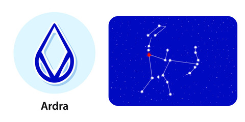

<
1. Pada 1st: The first pada of Ardra Nakshatra falls in Sagittarius Navamsa, governed by Jupiter. The people born in this pada are very helpful. They have a sharp mind and are consistent in their work.
2. Pada 2nd: The second quarter of this Nakshatra falls in the Capricorn Navamsa and is ruled by Saturn. People born in this pada are very materialistic. But the materialistic gains come to them only when Saturn and Mercury are well placed.
3. Pada 3rd: The third pada of the Ardra Nakshatra falls in the Aquarius Navamsa and is ruled by Saturn. The people born in this pada tend to have creative skills and the mental ability to absorb anything and everything. These people are open to change.
4. Pada 4th: The fourth pada of the Ardra Nakshatra falls in the Pisces Navamsa and is ruled by Jupiter. The people born in this pada are very giving in nature. They tend to help whoever they can but rarely get the same back.
“the moist one”Betelgeuse
Lord: Rahu (North lunar node)
Symbol: Teardrop, diamond, a human head
Deity : Rudra, the storm god
Stone: Hessonite is your lucky stone.
Lucky numbers : 4 and 5
Lucky days: Monday and Friday
If a baby born in this nakshatra give her or him a name with starting letter “K”.
These persons should not live in East facing houses.
Persons born in Arudra nakshatram will have good taarabalam with following nakshatrams:
Punarvasu, Aslesha, Pubba, Hasta, Chitta,Visakha, Jyesta, Purvashada, Sravanam, Dhanishta, Purvabhadra, Revati, Bharani, Rohini, Mrigasira.
Indian zodiac: 6° 40′ – 20° Mithuna
Western zodiac: 2° 40′ – 16° Cancer
Ardra Nakshatra
Characteristics male
The male native-born in the Ardra Nakshatra is the responsible kind. He has a general tendency to accomplish any given task at the earliest. The native, however, must ensure that he keeps this quality hidden if he doesn't wish to get overburdened in life. Though we make the male born in Ardra Nakshatra sound like a nerd, but he is not just that. In fact, being humorous is one of the things these people are good at. However, they first need to be comfortable around you to bring out their funny side. With friends and relatives, he will behave in an amicable way, but on rare occasions, he may be thankless to people who do him a favour.Profession male
The male native-born in the Ardra Nakshatra has the virtue of a sharp memory. Hence, these people do well in jobs that require a lot of thinking, such as writing, engineering, etc. However, the males born in this Nakshatra don't usually stick to one profession. They like to try everything before dedicating themselves to one single profession. Also, these people are quick learners and thus able to adapt themselves to changing work situations faster than anyone else. It is good for these males if they work away from home, especially during their career-peak age, i.e. between 32 to 42.Compatibility male
The male born in the Ardra Nakshatra may have delayed marriage. The delay in marriage is majorly due to you not being able to find a compatible partner. Any marriage that takes place before the age of 27 for you will bring complications, which may result in separation too. Compatibility should be the key when you go out to choose who you want to get married to and not the looks of the person if you wish to have a successful married life. In family life, you may feel like you are the most ignored one among your siblings.Health male
On the health front, the male born in the Ardra Nakshatra may be plagued by some incurable diseases that he may have to face after he turns 34. Taking early precautions can help in averting any serious complications. Any symptoms that can leads to asthma, dry cough or hearing impairment must be well-tracked.Characteristics female
The female native-born in the Ardra Nakshatra is a spending freak. And the one who isn't; badly wants to be. The general tendency is more dominant in Ardra women who have materialistic friends. When around friends and family, the women born in this Nakshatra are well-mannered and of a peaceful disposition. They don't like to indulge in arguments or fights as they are intelligent enough to beat you at your own game with just their intellect. Moreover, these women seek attention like a drug. A little attention from someone can make them weak. There are high chances that these people may have divorced parents.Profession female
The female native-born in the Ardra Nakshatra loves to learn and thus will acquire knowledge in any possible way. As a female born in Ardra Nakshatra, pursuing a career in the research or scientific field will bring you both success and monetary benefits. Other fields suitable for females born in Ardra Nakshatra are electronics engineering or anything medical related. However, you need to be careful if you are interested in pursuing a career in business as it is easy to manipulate you.Compatibility female
The female born in the Ardra Nakshatra has good compatibility with his husband but tends to marry late. Your experience with relationships before marriage may not be the one you would like to write about in your diary. However, this bad spell of luck in love changes once you tie the knot. You will have a romantic partner and good sexual compatibility. In family life, you will be much pulled towards your mother and then mother in law. Both of them will bring comfort to your life.Health female
On the health front, the female born in the Ardra Nakshatra may have to suffer from menstrual problems. Early identification is the key if they seek to avoid any such complications in the future. These ladies must also be careful of fire. There is also a slight chance of facing problems related to blood.Ardra Nakshatra Padas
1. Pada 1st: The first pada of Ardra Nakshatra falls in Sagittarius Navamsa, governed by Jupiter. The people born in this pada are very helpful. They have a sharp mind and are consistent in their work.
2. Pada 2nd: The second quarter of this Nakshatra falls in the Capricorn Navamsa and is ruled by Saturn. People born in this pada are very materialistic. But the materialistic gains come to them only when Saturn and Mercury are well placed.
3. Pada 3rd: The third pada of the Ardra Nakshatra falls in the Aquarius Navamsa and is ruled by Saturn. The people born in this pada tend to have creative skills and the mental ability to absorb anything and everything. These people are open to change.
4. Pada 4th: The fourth pada of the Ardra Nakshatra falls in the Pisces Navamsa and is ruled by Jupiter. The people born in this pada are very giving in nature. They tend to help whoever they can but rarely get the same back.